Code
pacman::p_load(tidyverse, tsibble, feasts, fable, seasonal)For the purpose of this hands-on exercise, the following R packages will be used
pacman::p_load(tidyverse, tsibble, feasts, fable, seasonal)lubridate provides a collection to functions to parse and wrangle time and date data.
tsibble, feasts, fable and fable.prophet are belong to tidyverts, a family of tidy tools for time series data handling, analysis and forecasting.
tsibble provides a data infrastructure for tidy temporal data with wrangling tools. Adapting the tidy data principles, tsibble is a data- and model-oriented object.
feasts provides a collection of tools for the analysis of time series data. The package name is an acronym comprising of its key features: Feature Extraction And Statistics for Time Series.
We use the read_csv() of readr package to import visitor_arrivals_by_air.csv file into R environment
ts_data <- read_csv("data/visitor_arrivals_by_air.csv")In the code chunk below, dmy() of lubridate package is used to convert data type of Month-Year field from Character to Date.
ts_data$`Month-Year` <- dmy(
ts_data$`Month-Year`)ts object versus tibble objecttibble object
ts_data# A tibble: 144 × 34
`Month-Year` `Republic of South Africa` Canada USA Bangladesh Brunei China
<date> <dbl> <dbl> <dbl> <dbl> <dbl> <dbl>
1 2008-01-01 3680 6972 31155 6786 3729 79599
2 2008-02-01 1662 6056 27738 6314 3070 82074
3 2008-03-01 3394 6220 31349 7502 4805 72546
4 2008-04-01 3337 4764 26376 7333 3096 76112
5 2008-05-01 2089 4460 26788 7988 3586 64808
6 2008-06-01 2515 3888 29725 8301 5284 55238
7 2008-07-01 2919 5313 33183 9004 4070 80747
8 2008-08-01 2471 4519 27427 7913 4183 66625
9 2008-09-01 2492 3421 21588 7549 3160 52649
10 2008-10-01 3023 4756 25112 7527 2983 54423
# ℹ 134 more rows
# ℹ 27 more variables: `Hong Kong SAR (China)` <dbl>, India <dbl>,
# Indonesia <dbl>, Japan <dbl>, `South Korea` <dbl>, Kuwait <dbl>,
# Malaysia <dbl>, Myanmar <dbl>, Pakistan <dbl>, Philippines <dbl>,
# `Saudi Arabia` <dbl>, `Sri Lanka` <dbl>, Taiwan <dbl>, Thailand <dbl>,
# `United Arab Emirates` <dbl>, Vietnam <dbl>, `Belgium & Luxembourg` <dbl>,
# Finland <dbl>, France <dbl>, Germany <dbl>, Italy <dbl>, …ts object versus tibble objectts object - converting it into a tibble object
ts_data_ts <- ts(ts_data)
head(ts_data_ts) Month-Year Republic of South Africa Canada USA Bangladesh Brunei China
[1,] 13879 3680 6972 31155 6786 3729 79599
[2,] 13910 1662 6056 27738 6314 3070 82074
[3,] 13939 3394 6220 31349 7502 4805 72546
[4,] 13970 3337 4764 26376 7333 3096 76112
[5,] 14000 2089 4460 26788 7988 3586 64808
[6,] 14031 2515 3888 29725 8301 5284 55238
Hong Kong SAR (China) India Indonesia Japan South Korea Kuwait Malaysia
[1,] 17103 41639 62683 37673 27937 284 31352
[2,] 21089 37170 47834 35297 22633 241 35030
[3,] 23230 44815 64688 42575 22876 206 37629
[4,] 17688 49527 58074 26839 20634 193 37521
[5,] 19340 67754 57089 30814 22785 140 38044
[6,] 19152 57380 70118 31001 22575 354 40419
Myanmar Pakistan Philippines Saudi Arabia Sri Lanka Taiwan Thailand
[1,] 5269 1395 18622 406 5289 13757 18370
[2,] 4643 1027 21609 591 4767 13921 16400
[3,] 6218 1635 28464 626 4988 11181 23387
[4,] 7324 1232 30131 644 7639 11665 24469
[5,] 5395 1306 30193 470 5125 11436 21935
[6,] 5542 1996 25800 772 4791 10689 19900
United Arab Emirates Vietnam Belgium & Luxembourg Finland France Germany
[1,] 2652 10315 1341 1179 6918 11982
[2,] 2230 13415 1449 1207 7876 13256
[3,] 3353 14320 1674 1071 8066 15185
[4,] 3245 15413 1426 768 8312 11604
[5,] 2856 14424 1243 690 7066 9853
[6,] 4292 21368 1255 624 5926 9347
Italy Netherlands Spain Switzerland United Kingdom Australia New Zealand
[1,] 2953 4938 1668 4450 41934 71260 7806
[2,] 2704 4885 1568 4381 44029 45595 4729
[3,] 2822 5015 2254 5015 49489 53191 6106
[4,] 3018 4902 1503 5434 35771 56514 7560
[5,] 2165 4397 1365 4427 24464 57808 9090
[6,] 2022 4166 1446 3359 22473 63350 9681tibble object to tsibble objectThe following code snippet converts ts_data from a tibble to a tsibble using the as_tsibble() function from the tsibble package in R.
ts_tsibble <- ts_data %>%
mutate(Month = yearmonth(`Month-Year`)) %>%
as_tsibble(index = `Month`)Visualizing the tsibble object:
ts_tsibble# A tsibble: 144 x 35 [1M]
`Month-Year` `Republic of South Africa` Canada USA Bangladesh Brunei China
<date> <dbl> <dbl> <dbl> <dbl> <dbl> <dbl>
1 2008-01-01 3680 6972 31155 6786 3729 79599
2 2008-02-01 1662 6056 27738 6314 3070 82074
3 2008-03-01 3394 6220 31349 7502 4805 72546
4 2008-04-01 3337 4764 26376 7333 3096 76112
5 2008-05-01 2089 4460 26788 7988 3586 64808
6 2008-06-01 2515 3888 29725 8301 5284 55238
7 2008-07-01 2919 5313 33183 9004 4070 80747
8 2008-08-01 2471 4519 27427 7913 4183 66625
9 2008-09-01 2492 3421 21588 7549 3160 52649
10 2008-10-01 3023 4756 25112 7527 2983 54423
# ℹ 134 more rows
# ℹ 28 more variables: `Hong Kong SAR (China)` <dbl>, India <dbl>,
# Indonesia <dbl>, Japan <dbl>, `South Korea` <dbl>, Kuwait <dbl>,
# Malaysia <dbl>, Myanmar <dbl>, Pakistan <dbl>, Philippines <dbl>,
# `Saudi Arabia` <dbl>, `Sri Lanka` <dbl>, Taiwan <dbl>, Thailand <dbl>,
# `United Arab Emirates` <dbl>, Vietnam <dbl>, `Belgium & Luxembourg` <dbl>,
# Finland <dbl>, France <dbl>, Germany <dbl>, Italy <dbl>, …ts_longer <- ts_data %>%
pivot_longer(cols = c(2:34),
names_to = "Country",
values_to = "Arrivals")ts_longer %>%
filter(Country == "Vietnam") %>%
ggplot(aes(x = `Month-Year`,
y = Arrivals))+
geom_line(size = 1)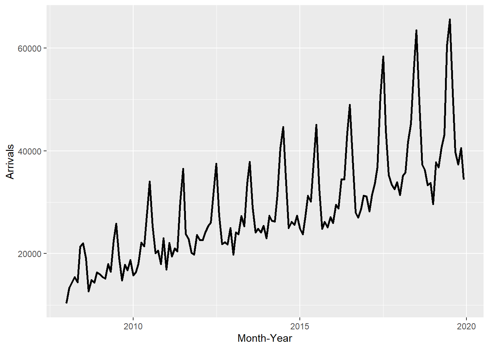
ggplot(data = ts_longer,
aes(x = `Month-Year`,
y = Arrivals,
color = Country))+
geom_line(size = 0.5) +
theme(legend.position = "bottom",
legend.box.spacing = unit(0.5, "cm"))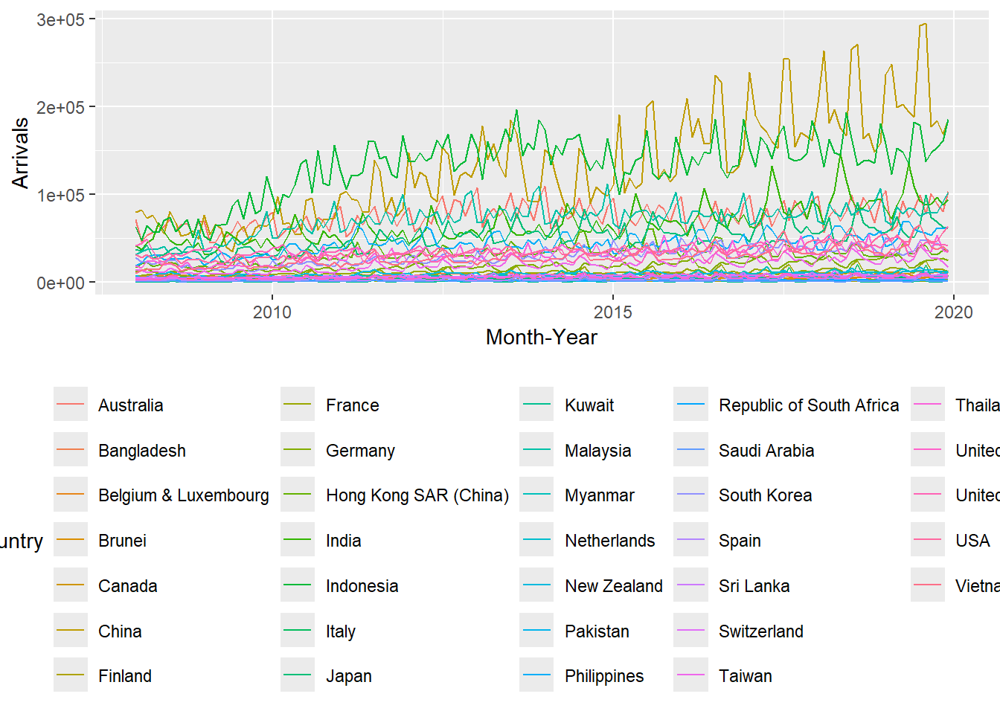
The facet_wrap() function from the ggplot2 package is used to create small multiple line graphs, also known as a trellis plot.
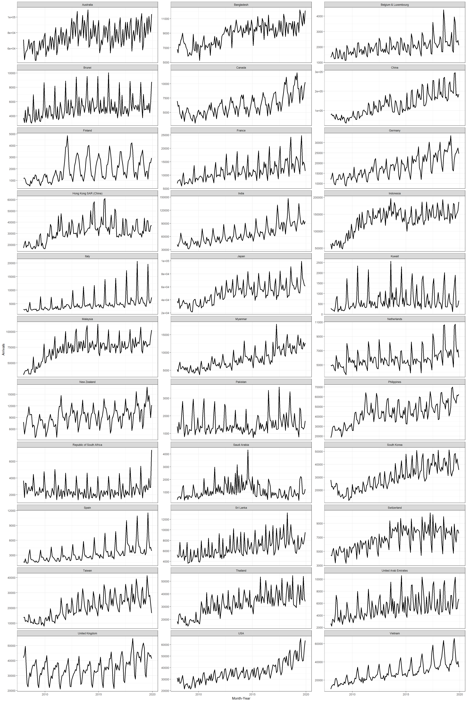
To effectively visualize time-series data, we need to transform the data frame from wide to long format. This can be achieved using the pivot_longer() function from the tidyr package, as demonstrated in the code below.
tsibble_longer <- ts_tsibble %>%
pivot_longer(cols = c(2:34),
names_to = "Country",
values_to = "Arrivals")A seasonal plot is similar to a time plot but displays data based on individual seasons. It can be created using the gg_season() function from the feasts package.
tsibble_longer %>%
filter(Country == "Italy" |
Country == "Vietnam" |
Country == "United Kingdom" |
Country == "Germany") %>%
gg_season(Arrivals)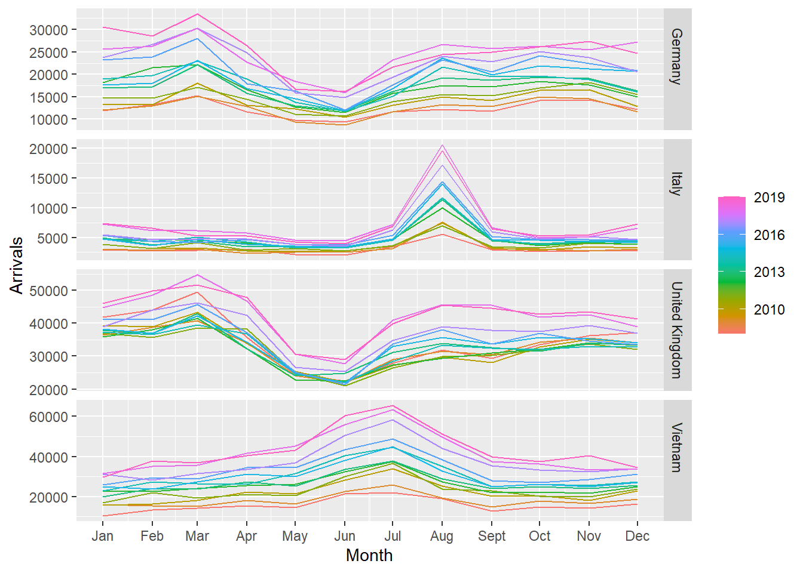
Figure below shows two time-series lines of visitor arrivals from Vietnam and Italy. Both lines reveal clear sign of seasonal patterns but not the trend.
tsibble_longer %>%
filter(Country == "Vietnam" |
Country == "Italy") %>%
autoplot(Arrivals) +
facet_grid(Country ~ ., scales = "free_y")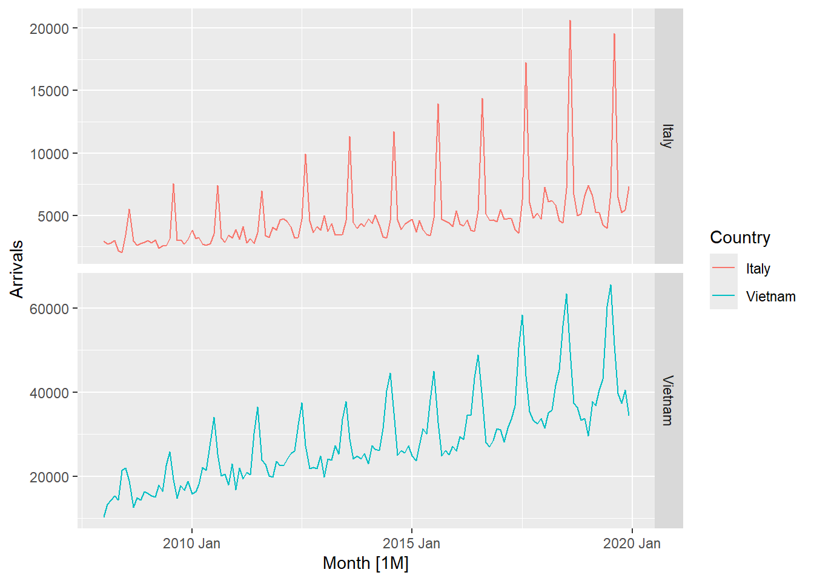
In the code chunk below, cycle plots using gg_subseries() of feasts package are created. Notice that the cycle plots show not only seasonal patterns but also trend.
tsibble_longer %>%
filter(Country == "Vietnam" |
Country == "Italy") %>%
gg_subseries(Arrivals)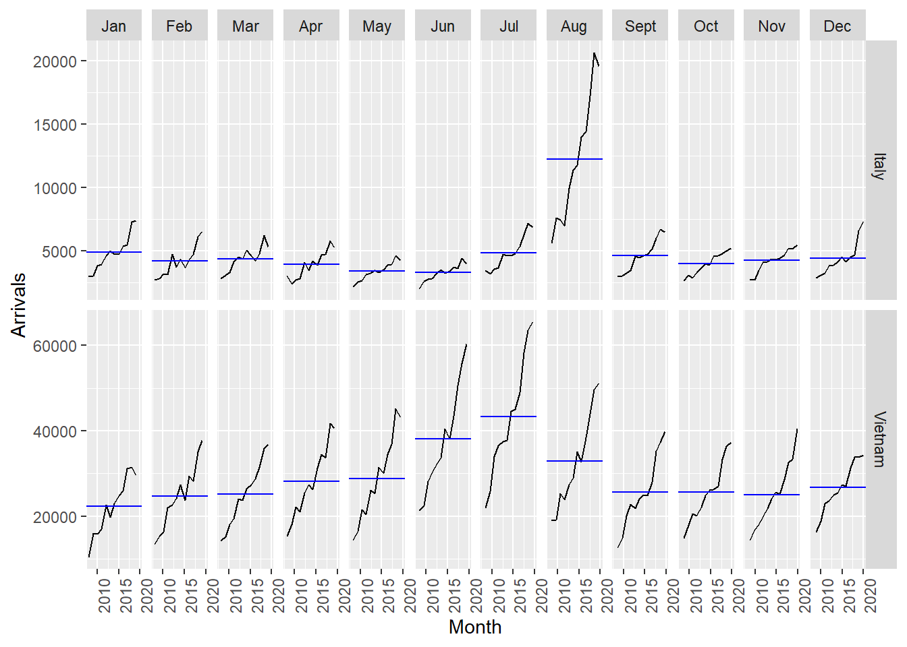
In the code chunk below, ACF() of feasts package is used to plot the ACF curve of visitor arrival from Vietnam.
tsibble_longer %>%
filter(`Country` == "Vietnam") %>%
ACF(Arrivals) %>%
autoplot()
In the code chunk below, PACF() of feasts package is used to plot the Partial ACF curve of visitor arrival from Vietnam.
tsibble_longer %>%
filter(`Country` == "Vietnam") %>%
PACF(Arrivals) %>%
autoplot()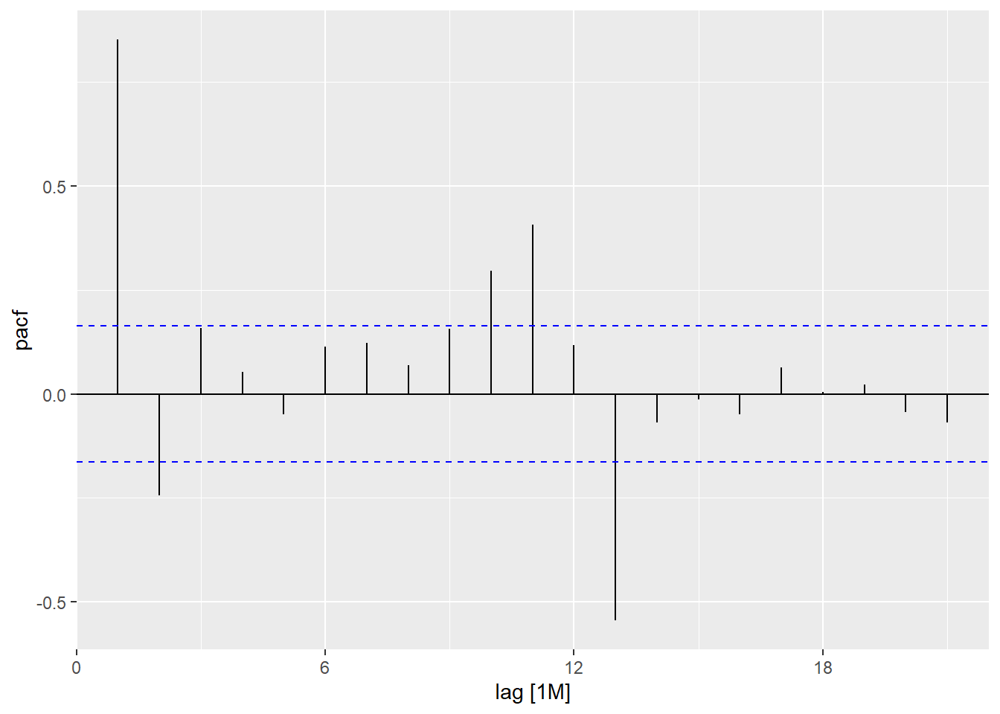
Code chunk below is used to prepare a trellis plot of ACFs for visitor arrivals from Vietnam, Italy, United Kingdom and China.
tsibble_longer %>%
filter(`Country` == "Vietnam" |
`Country` == "Italy" |
`Country` == "United Kingdom" |
`Country` == "China") %>%
ACF(Arrivals) %>%
autoplot()
On the other hand, code chunk below is used to prepare a trellis plot of PACFs for visitor arrivals from Vietnam, Italy, United Kingdom and China.
tsibble_longer %>%
filter(`Country` == "Vietnam" |
`Country` == "Italy" |
`Country` == "United Kingdom" |
`Country` == "China") %>%
PACF(Arrivals) %>%
autoplot()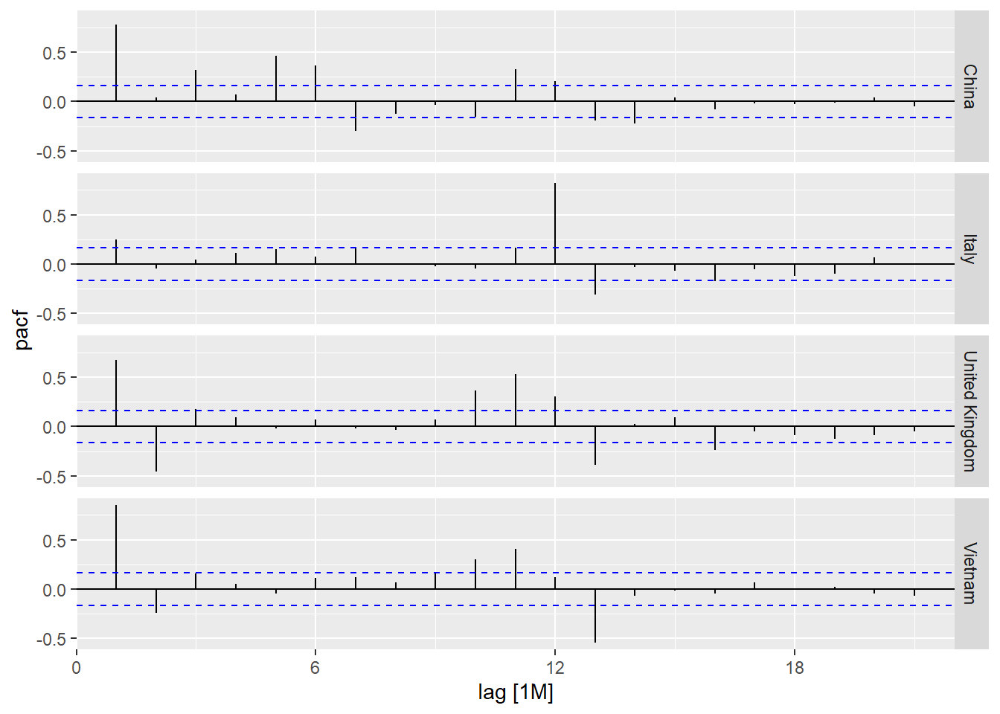
An interesting function in the feasts package for time series decomposition is gg_tsdisplay(). It creates a composite plot, displaying the original time series at the top, with the ACF (Autocorrelation Function) plot on the left and the seasonal plot on the right.
tsibble_longer %>%
filter(`Country` == "Vietnam") %>%
gg_tsdisplay(Arrivals)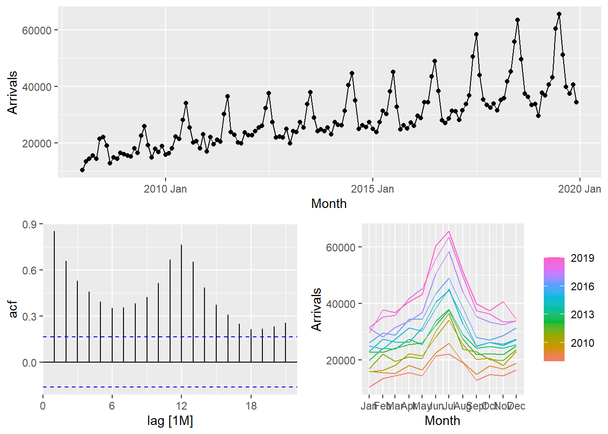
STL (Seasonal and Trend decomposition using Loess) is a robust method for time series decomposition, widely used in economic and environmental analyses. Developed by Cleveland et al. (1990), STL utilizes LOESS, a nonlinear regression technique, to break a time series into trend, seasonal, and remainder components. The algorithm operates in two loops: the inner loop alternates between seasonal and trend smoothing, while the outer loop minimizes outlier effects. Unlike classical decomposition methods such as SEATS and X11, STL can handle any seasonal pattern, allows user control over trend and seasonal smoothness, and is robust to outliers, ensuring that anomalies do not distort the overall trend or seasonality.
In the code chunk below, STL() of feasts package is used to decomposite visitor arrivals from Vietnam data.
tsibble_longer %>%
filter(`Country` == "Vietnam") %>%
model(stl = STL(Arrivals)) %>%
components() %>%
autoplot()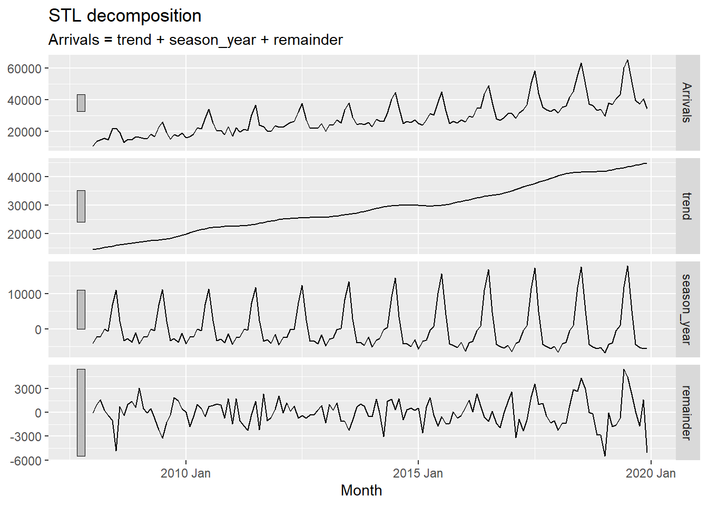
The grey bars on the left of each panel indicate the relative scale of the components. Since each panel has a different scale, the bar sizes vary, even though they represent the same length. A larger grey bar in the bottom panel suggests that the remainder component has the smallest variation. If the bottom three panels were resized so their bars matched the data panel, all components would be on the same scale.
The classical_decomposition() function from the feasts package decomposes a time series into seasonal, trend, and irregular components using moving averages. It supports both additive and multiplicative seasonal components.
tsibble_longer %>%
filter(`Country` == "Vietnam") %>%
model(
classical_decomposition(
Arrivals, type = "additive")) %>%
components() %>%
autoplot()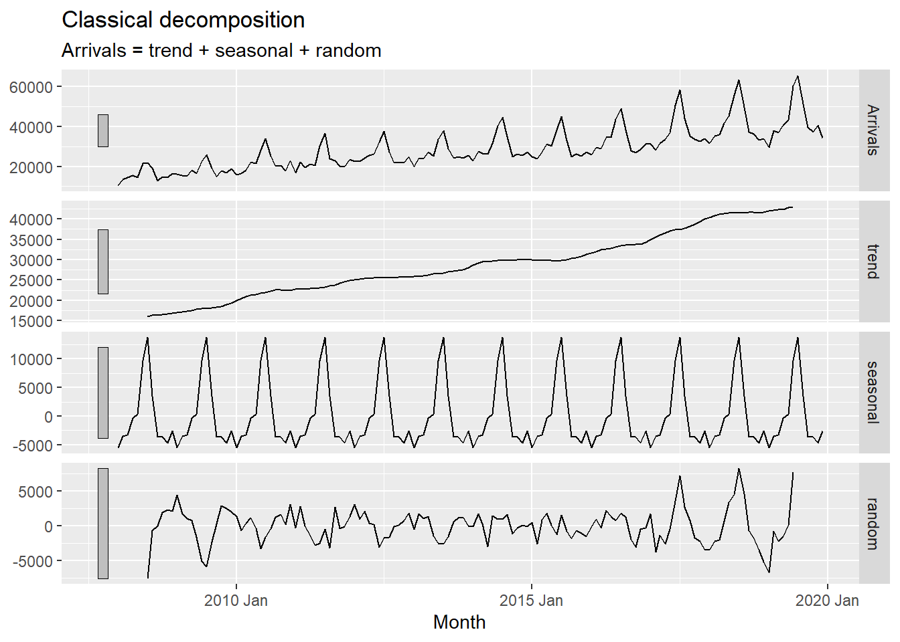
In forecasting, it is best practice to split the dataset into a training (estimate) sample and a hold-out sample. The training sample (typically 75-80% of the data) is used to estimate starting values and smoothing parameters, while the hold-out sample is used to evaluate forecasting performance on unseen data. This ensures that the model is assessed based on new observations, preventing overfitting.
First, an extra column called Type indicating training or hold-out will be created by using mutate() of dplyr package. It will be extremely useful for subsequent data visualisation.
In this example we will use the last 12 months for hold-out and the rest for training.
First, an extra column called Type indicating training or hold-out will be created by using mutate() of dplyr package. It will be extremely useful for subsequent data visualisation.
vietnam_ts <- tsibble_longer %>%
filter(Country == "Vietnam") %>%
mutate(Type = if_else(
`Month-Year` >= "2019-01-01",
"Hold-out", "Training"))Next, a training data set is extracted from the original data set by using filter() of dplyr package.
vietnam_train <- vietnam_ts %>%
filter(`Month-Year` < "2019-01-01")